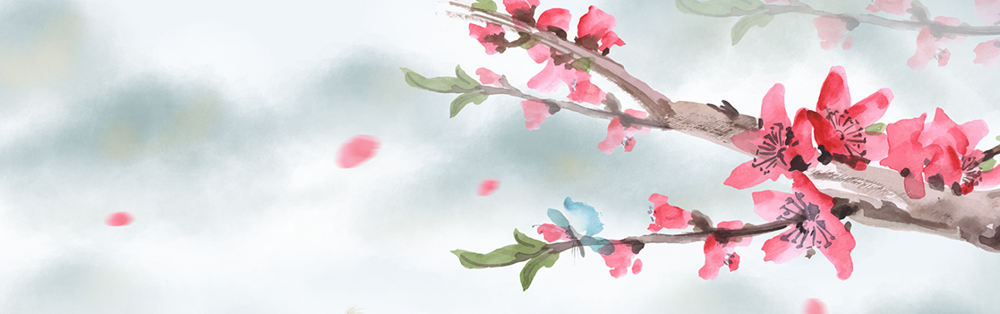

水墨画是中国汉族特色较强的一种绘画艺术形式，借助具有本民族特色的绘画工具和材料(毛笔、宣纸和墨)，表现具有意象和意境的绘画。其特征主要有两个方面，一是从工具材料上来说，水墨画具有水乳交融，酣畅淋漓的艺术效果。具体地说就是将水、墨和宣纸的属性特征完美地体现出来，如水墨相调，出现干湿浓淡的层次;再有水墨和宣纸相融，产生溵湿渗透的特殊效果。二是水墨画表现特征，由于水墨和宣纸的交融渗透，善于表现似像非像的物象特征，即意象。这种意象效果能使人产生丰富的遐想，符合"中国绘画注重意境"的审美理想。
中国由古至今，发明了多种绘画方法，最常见的是用画笔作画。以后更出现用口咬笔，脚趾握笔，双脚夹笔，腋夹笔，身体着墨(包括手指、脚趾、头发、手肘等部位),当代中国水墨画家在创作水墨画时,材料运用是广泛的,在非宣纸上创作水墨画成了潮流,如在衣服上,在人的身体上,题材上更是多样化,不仅限于山水花鸟,除抽象水墨外更扩展到行为艺术范畴。
水墨画，是中国绘画的代表，也就是狭义的"国画"，并传到东亚其他地区。基本的水墨画，仅有水与墨，黑与白色，但进阶的水墨画，也有工笔花鸟画，色彩缤纷，后者有时也称为彩墨画。中国水墨画的特点是:近处写实，远处抽象，色彩微妙，意境丰富。黑白调子的水墨画早期都是以山水画的形式来表现的，虽然仅有黑与白，但因为纸色的关系，其实是略为偏黄的。彩色的水墨画在近代有泼墨山水的应用，也有水墨动画的应用。与水墨画有关的还有水墨版画。与一般版画不同的是，水墨版画虽然也是木刻版画，但使用宣纸做为纸材，在不同的地方重复水墨印刷，层层渲染的效果，使得每一张作品都明显不同，也具有水墨画的美感。中国画的一种。指纯用水墨所作之画。相传始于唐代，成于五代，盛于宋元，明朝及近代以来续有发展。以笔法为主导，充分发挥墨法的功能。"墨即是色"，指墨的浓淡变化就是色的层次变化，"墨分五彩"，指色彩缤纷可以用多层次的水墨色度代替之。北宋沈括《图画歌》云:"江南董源传巨然，淡墨轻岚为一体。"就是说的水墨画。唐宋人画山水多湿笔，出现"水晕墨章"之效，元人始用干笔，墨色更多变化，有"如兼五彩"的艺术效果。唐代王维对画体提后人宗之。长期以来水墨画在中国绘画史上占着重要地位。水墨画是中国画的一个分支结构，是组成中国画体系的元素之一。从物理的角度，水墨画就是用毛笔蘸着墨和水的合成物，描绘在宣纸上的一种绘画形式。
